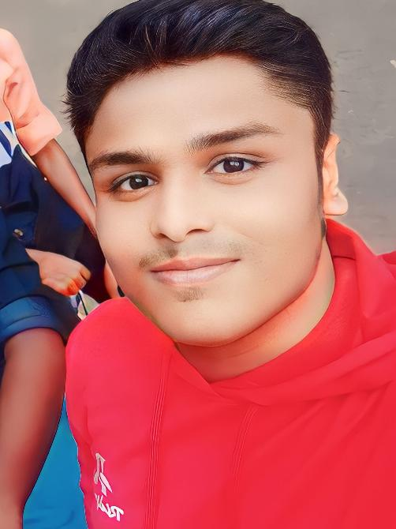

S.G.Syed Kamal Irfan
Tiruchirappalli,Tamil Nadu
Phone Number: 1234567890
Email address: syedkamal@gmail.com
LinkedIn: Syed Kamal Irfan
Objectives
Creative and passionate Web Development graduate with an Honors Diploma in Full Stack Development and i'm currently pursuing my under graduate degree in St.Joseph's college, seeking a challenging role as developer.
Committed to building efficient User-Friendly Web pages and Web Sites and continously improving through hands-on practice and experiencing the new developments
in web Development.
Ready to contribute to real-world projects and grow with a forward-thinking oraganization.moreover i'm looking for oppurtunites for interships or junior level roles
where i can learn and grow as a developer.
Education
Bachelor of computer Applications(BCA)
St.Joseph's College Tiruchirappalli (pursuing)
Year Of Study: First Year
Honors Diploma In Full Stack Development
Computer Software College ,Tiruchirappalli
- Technologies Covered: HTML5, CSS3, C, C++, JAVA, PYTHON,
JAVASCRIPT, REACTjs, Django
- Database Management: MYSQL, Oracle Database, MONGOdb
- Version Control: Neo Cities
Higher secondary (12th Grade)
percentage: 85%
Year Of Completion: 2024
secondary (10th Grade)
percentage: 86%
Year Of Completion: 2022
Technical Proficiency
- Front-End: HTML5, CSS3, JAVASCRIPT
- Back-End: PYTHON, REACTjs
- Database: MYSQL, Oracle Database, MONGOdb
- Tools And platform: Neo Cities, MYSQL Workbench, VS Code
Languages Known
-
Tamil: native (Read,Write,Speak)
- English: Fluent (Read,Write,Speak)
- Urdu: Conversational (Speak)
- Hindi: Conversational (Read,Speak)
- Spanish: basic level fluency(read,Write,Speak)
Core Strength
-
Good Foundation on Front-End Technologies
coupled with a passion to become a Developer
-
Clear Communication and Team Collaboration
-
Adapt any environment quickly
- Multi-Lingual communication skills
- Punctual, HardWorking